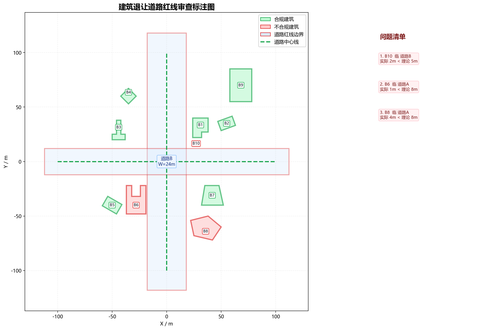

| 建筑名称 | 类型 | 高度(m) | 临接道路 | 实际让距(m) | 理论让距(m) | 判定 | 依据链 |
|---|---|---|---|---|---|---|---|
| B1_L形低层住宅 | 低层 | 9.00 | 道路A | 6.00 | 5.00 | 合规 | 表3-2：20m<道路红线宽度≤40m，低层建筑，退让=5.0m；第3款：道路交叉口四周建筑控制值5.0m |
| B1_L形低层住宅 | 低层 | 9.00 | 道路B | 10.00 | 5.00 | 合规 | 表3-2：20m<道路红线宽度≤40m，低层建筑，退让=5.0m；第3款：道路交叉口四周建筑控制值5.0m |
| B2_斜向多层办公楼 | 多层 | 18.00 | 道路B | 16.38 | 8.00 | 合规 | 表3-2：20m<道路红线宽度≤40m，多层建筑，退让=8.0m；第3款：道路交叉口四周建筑控制值5.0m |
| B2_斜向多层办公楼 | 多层 | 18.00 | 道路A | 28.88 | 8.00 | 合规 | 表3-2：20m<道路红线宽度≤40m，多层建筑，退让=8.0m；第3款：道路交叉口四周建筑控制值5.0m |
| B3_T形社区中心 | 多层 | 22.00 | 道路B | 8.00 | 8.00 | 合规 | 表3-2：20m<道路红线宽度≤40m，多层建筑，退让=8.0m；第3款：道路交叉口四周建筑控制值5.0m |
| B3_T形社区中心 | 多层 | 22.00 | 道路A | 20.00 | 8.00 | 合规 | 表3-2：20m<道路红线宽度≤40m，多层建筑，退让=8.0m；第3款：道路交叉口四周建筑控制值5.0m |
| B4_菱形低层别墅 | 低层 | 8.00 | 道路A | 9.93 | 5.00 | 合规 | 表3-2：20m<道路红线宽度≤40m，低层建筑，退让=5.0m；第3款：道路交叉口四周建筑控制值5.0m |
| B4_菱形低层别墅 | 低层 | 8.00 | 道路B | 40.93 | 5.00 | 合规 | 表3-2：20m<道路红线宽度≤40m，低层建筑，退让=5.0m；第3款：道路交叉口四周建筑控制值5.0m |
| B5_斜向高层公寓 | 高层 | 65.00 | 道路B | 19.92 | 9.60 | 合规 | 表3-2：20m<道路红线宽度≤40m，高层建筑，退让=8Q=8×1.2=9.6m；第3款：道路交叉口四周建筑控制值5.0m |
| B5_斜向高层公寓 | 高层 | 65.00 | 道路A | 23.00 | 9.60 | 合规 | 表3-2：20m<道路红线宽度≤40m，高层建筑，退让=8Q=8×1.2=9.6m；第3款：道路交叉口四周建筑控制值5.0m |
| B6_U形商业建筑 | 多层 | 16.00 | 道路A | 1.00 | 8.00 | 不合规 | 表3-2：20m<道路红线宽度≤40m，多层建筑，退让=8.0m；第3款：道路交叉口四周建筑控制值5.0m |
| B6_U形商业建筑 | 多层 | 16.00 | 道路B | 10.00 | 8.00 | 合规 | 表3-2：20m<道路红线宽度≤40m，多层建筑，退让=8.0m；第3款：道路交叉口四周建筑控制值5.0m |
| B7_梯形低层商铺 | 低层 | 6.00 | 道路B | 10.00 | 5.00 | 合规 | 表3-2：20m<道路红线宽度≤40m，低层建筑，退让=5.0m；第3款：道路交叉口四周建筑控制值5.0m |
| B7_梯形低层商铺 | 低层 | 6.00 | 道路A | 14.00 | 5.00 | 合规 | 表3-2：20m<道路红线宽度≤40m，低层建筑，退让=5.0m；第3款：道路交叉口四周建筑控制值5.0m |
| B8_不规则多层厂房 | 多层 | 20.00 | 道路A | 4.00 | 8.00 | 不合规 | 表3-2：20m<道路红线宽度≤40m，多层建筑，退让=8.0m；第3款：道路交叉口四周建筑控制值5.0m |
| B8_不规则多层厂房 | 多层 | 20.00 | 道路B | 38.00 | 8.00 | 合规 | 表3-2：20m<道路红线宽度≤40m，多层建筑，退让=8.0m；第3款：道路交叉口四周建筑控制值5.0m |
| B9_矩形高层综合体 | 高层 | 90.00 | 道路A | 40.00 | 11.20 | 合规 | 表3-2：20m<道路红线宽度≤40m，高层建筑，退让=8Q=8×1.4=11.2m；第3款：道路交叉口四周建筑控制值5.0m |
| B9_矩形高层综合体 | 高层 | 90.00 | 道路B | 43.00 | 11.20 | 合规 | 表3-2：20m<道路红线宽度≤40m，高层建筑，退让=8Q=8×1.4=11.2m；第3款：道路交叉口四周建筑控制值5.0m |
| B10_低层门卫房 | 低层 | 4.50 | 道路B | 2.00 | 5.00 | 不合规 | 表3-2：20m<道路红线宽度≤40m，低层建筑，退让=5.0m；第3款：道路交叉口四周建筑控制值5.0m |
| B10_低层门卫房 | 低层 | 4.50 | 道路A | 6.00 | 5.00 | 合规 | 表3-2：20m<道路红线宽度≤40m，低层建筑，退让=5.0m；第3款：道路交叉口四周建筑控制值5.0m |
建筑内部仅保留短标签；绿色为合规建筑，红色为不合规建筑；道路红线为红色边界，中心线为绿色虚线，右侧为问题清单图例。

合规建筑：7 栋；不合规建筑：3 栋。
t_parse=0.0217s t_review=0.0008s t_render=0.4018s t_total=0.4242s